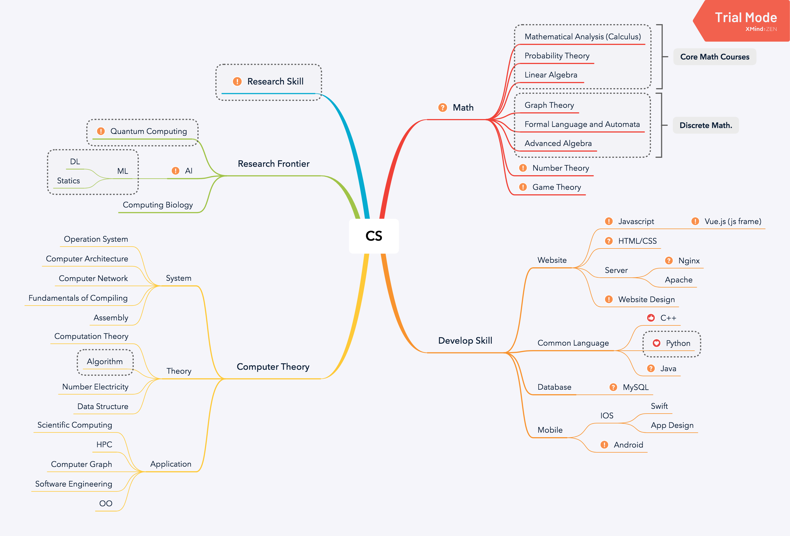

What have I done?
Built my diary blog using github.io in 3.6.
Summarize the C.S. field in 3.8.
Study in Stastic Machine Learning by book 《统计学习方法》 at the begining of this month, but just failed in accomplishment.
I have enough time to finish the book and code all algorithms actually, but I just haven’t done it because I can’t focus on it.
I made up my mind of my ways after graduation (this). But I haven’t seek advice for abroad neither study QC.
I registered for GRE (4.27) and TOEFL (5.27), which will definitely be my last exams for English. I won’t lose them any more (I have spend more than ￥10000 for them). And I have a language test to get a abroad chance in 3.27. But I just cannot put all my energy into these task. For these exams I bought a speaking course cost ￥2000.
I summarized my Algorithm and C.S. knowledge into mindmaps.
.png)

(Programming Contest) I won the 1st in the school PTA programming contest in 3.16 and AK (got 290 points) in the practice contest in 3.23. I nearly AC the problem sets of PTA. I have participated in a contest but have a problem not solved.
I accepted Prof. Ji’s invitation of a project about public opinion analysis. I invited 3 classmates to be co-workers. We will get a little profit from it.
I watched over the anime Inuyasha. Kikyo’s tragedy moved me very deeply.
I have no exercise this month.
- My piano class just go to the 4-3.
What should I have done?
- Mail to the laboratory of QC
- A lot of practice of English
- Study hard on QC
- Build a compiler
- Read
- Excersice
- Get up early everyday
Things upcoming and exciting
- Have a lunch with Ruping in 3.26
- Test in 3.27
- GRE in 4.27 !!!
- IIIS’s camp application start in 4.16.
- Finish classes: 职业生涯规划，宝石鉴定
What am I going to do?
- Mail to the laboratory of QC
- A lot of practice of English
- Study hard on QC
- Read
- Excersice
- Get up early everyday
- Piano lessons to 5!
- Build a compiler
- Do some works about that project
- Finish problems and have a contest per week.
One sentence to summarize
You have enough time, but just a limited part of it can be used.
Actions speak louder than words.